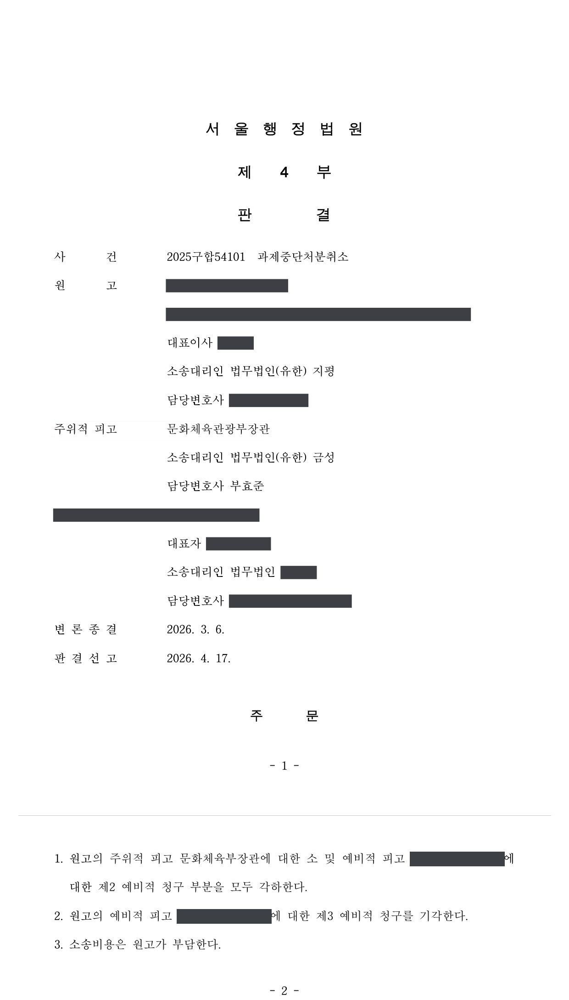

국가연구개발사업 과제 중단처분·협약 해약 취소소송
서울행정법원 2025구합54101 · 담당변호사 부효준
판결문

사건의 요지
연구책임자의 소속을 사실과 다르게 기재하였다는 이유로 내려진 국가연구개발과제 중단 통보와 협약 해약에 관하여, 중단 통보가 항고소송의 대상인 처분인지, 소관 부처의 장과 전문기관 가운데 누가 피고가 되어야 하는지가 다투어진 사건입니다. 처분청에 대한 소는 피고적격이 없다는 이유로 각하되었고, 전문기관에 대한 협약 해약 무효확인청구는 받아들여지지 않았습니다.
사건의 주요 내용
원고 회사는 2024년 문화콘텐츠 분야 국가연구개발사업의 지원대상 과제로 선정되어 2024년 9월 전문기관과 국가연구개발사업 협약을 체결하였습니다. 그런데 전문기관이 2024년 12월 이 과제에 대한 특별평가를 실시한 결과, 연구개발계획서를 제출할 당시 연구책임자가 주관연구개발기관인 원고 회사에 소속되어 있지 않았는데도 실제 소속된 것처럼 기재한 것이 '거짓 또는 부정한 방법에 의한 연구개발과제 신청'에 해당한다고 보아 과제를 '중단'으로 판정하였고, 전문기관의 장은 2025년 2월 원고 회사에 그 취지를 통보하였습니다.
원고 회사는 소관 중앙행정기관의 장(처분청)을 주위적 피고로, 전문기관을 예비적 피고로 삼아 소송을 제기하였습니다. 주위적으로 처분청의 과제 중단처분 취소를 구하고, 예비적으로 처분청의 협약 해약 통지 무효확인, 전문기관의 과제 중단처분 취소, 전문기관의 협약 해약 통지 무효확인을 차례로 구하는 구조였습니다. 부효준 변호사는 주위적 피고인 처분청을 대리하였습니다.
쟁점
- 전문기관의 장이 자신의 명의로 한 국가연구개발과제 중단 통보에 대하여 소관 중앙행정기관의 장(처분청)이나 법인인 전문기관을 피고로 삼을 수 있는지
- 국가연구개발과제 중단 통보가 항고소송의 대상이 되는 행정처분인지
- 협약 해약 통지의 무효확인을 구할 확인의 이익이 있는지, 그리고 연구책임자의 소속을 사실과 다르게 기재한 것이 '거짓이나 부정한 방법'으로 과제를 신청한 경우에 해당하는지
원고의 주장
- 과제 중단과 협약 해약은 소관 중앙행정기관의 장의 처분이라는 전제에서 처분청을 주위적 피고로 삼아 과제 중단처분의 취소와 협약 해약 통지의 무효확인을 구하고, 전문기관은 예비적 피고로만 삼았습니다.
- 원고 회사는 과제 수행을 위하여 연구책임자와 용역계약과 근로계약을 체결하였으므로 '거짓이나 부정한 방법으로 과제를 신청하였다'는 중단 사유가 존재하지 않는다고 주장하였습니다.
- 설령 중단 사유가 있더라도 과제 중단 판정은 재량권을 일탈·남용한 것이어서 위법·무효이고, 그 후속조치인 협약 해약 통지도 무효라고 주장하였습니다.
부효준 변호사의 주장
- 과제 중단 통보는 전문기관의 장이 자신의 명의로 한 것이므로, 소관 중앙행정기관의 장을 상대로 한 과제 중단처분 취소청구와 협약 해약 통지 무효확인청구는 피고적격(당사자적격)이 없는 자를 상대로 한 소로서 부적법하다고 본안전항변을 하였습니다.
- 아울러 과제 중단 통보는 항고소송의 대상이 되는 행정처분에 해당하지 않는다는 점도 함께 다투었습니다.
법원의 판단
법원은 항고소송은 처분을 외부적으로 자신의 명의로 행한 행정청을 피고로 하여야 한다는 대법원 판례(1994. 6. 14. 선고 94누1197 판결, 2010. 6. 10. 선고 2010두214 판결)를 전제로, 전문기관의 장이 자신의 명의로 중단 통보를 하였으므로 원고는 전문기관의 장을 상대로 다투어야 한다고 보았습니다. 이에 따라 처분청에 대한 주위적·제1 예비적 청구와 법인인 전문기관을 상대로 한 과제 중단처분 취소청구(제2 예비적 청구)는 피고적격이 없는 자를 상대로 한 소로서 모두 각하되었습니다.
다만 과제 중단 통보가 처분이 아니라는 주장은 받아들이지 않았습니다. 중단 통보가 있으면 연구개발비를 더 집행할 수 없고 협약 해약과 연구개발비 정산, 참여제한·제재부가금 부과로 이어질 수 있으므로, 원고의 권리·의무에 직접 영향을 미치는 항고소송의 대상인 처분이라고 판단하였습니다.
전문기관을 상대로 한 협약 해약 통지 무효확인청구(제3 예비적 청구)에 관하여는, 해약이 유효하게 존속하는 한 연구개발비 정산에 따른 회수 등 불이익을 받을 가능성이 있어 확인의 이익은 있다고 보았습니다. 그러나 본안에서는 연구책임자가 과제 신청 당시 원고 회사와 250만 원의 대가를 받는 용역계약만 체결하였고 근로계약·건강보험 자격 취득·급여 지급이 모두 과제 개시일 이후에 이루어진 점 등을 들어 연구책임자의 소속기관을 허위로 기재한 신청이라고 인정하였고, 연구책임자의 소속은 과제 수행의 안정성과 선정평가의 공정성에 직결되는 중요한 요소라는 이유로 재량권 일탈·남용도 부정하여 이 청구를 받아들이지 않았습니다. 소송비용은 모두 원고가 부담하게 되었습니다.
항고소송은 원칙적으로 소송의 대상인 행정처분 등을 외부적으로 그의 명의로 행한 행정청을 피고로 하고, 그 행정처분을 하게 된 연유가 상급행정청이나 타행정청의 지시나 통보에 의한 것이라 하여 다르지 않으며, 권한의 위임이나 위탁을 받아 수임행정청이 정당한 권한에 기하여 수임행정청 명의로 한 처분은 물론, 내부위임이나 대리권을 수여받은 데 불과하여 원행정청 명의나 대리관계를 밝히지 아니하고는 그의 명의로 처분 등을 할 권한이 없는 행정청이 권한 없이 그의 명의로 한 처분에 대하여도 처분명의자인 행정청이 피고가 된다(대법원 1994. 6. 14. 선고 94누1197 판결, 대법원 2010. 6. 10. 선고 2010두214 판결 등 참조).
위에서 본 사실과 증거에 변론 전체의 취지를 종합하면, 전문기관의 장이 그 명의로 원고에게 이 사건 중단 통보를 한 사실이 인정되므로, 원고는 전문기관의 장을 상대로 그 무효확인 또는 취소를 구하여야 한다. 따라서 처분청에 대한 주위적, 제1 예비적 청구는 피고적격이 없는 자를 상대로 한 소로서 부적법하다.
서울행정법원 2025구합54101 판결 이유 '3. 주위적, 제1 예비적 청구에 대한 본안전항변에 관한 판단 — 나. 판단'
이러한 중단 통보가 이루어진 경우 원고는 더 이상 연구개발비를 집행할 수 없고, 나아가 이 사건 협약의 해약 및 연구개발비 정산, 국가연구개발활동 참여 제한 또는 제재부가금 부과 등의 제재처분으로 이어질 수 있다.
위와 같은 관련 법령의 규정 및 이 사건 중단 통보로 인하여 발생하는 법적 효과 등을 종합하여 보면, 이 사건 중단 통보는 원고의 권리·의무에 직접적인 영향을 미치는 행위로서 항고소송의 대상이 되는 행정처분이라고 봄이 타당하다(대법원 2015. 12. 24. 선고 2015두264 판결 등 참조). 따라서 이 사건 중단 통보가 항고소송의 대상이 되는 처분이 아니라는 주장은 이유 없다.
서울행정법원 2025구합54101 판결 이유 '4. 나. 이 사건 중단 통보의 처분성에 관한 판단'
국가연구개발사업은 국가 재정이 투입되는 사업으로서 그 선정 및 수행 과정의 공정성과 투명성이 강하게 요구된다. 국가연구개발혁신법은 이러한 공정성과 투명성을 확보하기 위하여 부정한 방법에 의한 신청이 있는 경우 특별평가를 통해 과제를 중단하고 협약을 해약할 수 있도록 규정하고 있다. 특히 원고와 같이 연구개발기관 선정 단계에서 핵심 인력에 관한 사항을 사실과 다르게 기재하는 행위는 평가절차의 공정성을 훼손할 수 있는 행위로서 위법성이 크고, 나아가 연구개발비 집행의 투명성에도 부정적인 영향을 미칠 수 있다.
서울행정법원 2025구합54101 판결 이유 '5. 나. 3) 재량권 일탈·남용에 관한 판단'
※ 판결 이유 가운데 이 사건의 판단 기준이 된 부분을 그대로 옮긴 것으로, 당사자 이름 등은 가렸습니다.
이 사건이 보여 주는 것
국가연구개발사업에서 과제 중단이나 협약 해약은 소관 부처의 장이 아니라 업무를 대행하는 전문기관의 장 명의로 통보되는 경우가 많습니다. 이 판결은 그런 경우 소송의 상대방은 통보 명의자인 전문기관의 장이고, 소관 부처의 장이나 법인인 전문기관 자체를 피고로 삼으면 본안 판단을 받지 못하고 각하된다는 점을 보여 줍니다. 통보문의 명의자를 확인하여 피고를 정하는 것이 소 제기의 첫 단계입니다.
한편 과제 중단 통보 자체는 항고소송으로 다툴 수 있는 처분으로 인정되었습니다. 연구개발계획서의 참여연구자 현황에 연구책임자의 소속기관이나 고용 형태를 사실과 다르게 적는 것은 그 자체로 '거짓이나 부정한 방법'에 의한 신청으로 평가되어 과제 중단과 협약 해약, 나아가 참여제한·제재부가금으로 이어질 수 있으므로, 과제를 신청하는 시점에 연구책임자의 소속관계(근로계약, 건강보험 자격 등)를 서류와 일치시켜 두어야 합니다.
관련 법령국가연구개발혁신법 제11조 제4항, 제15조 제1항, 제22조 제1항, 제32조 제1항
관련 단어과제 중단협약 해약피고적격처분성전문기관특별평가거짓이나 부정한 방법연구책임자의 소속 허위 기재국가연구개발혁신법 제15조각하처분 적법문화콘텐츠 연구개발사업
비슷한 처분을 받으셨다면
국가연구개발 제재처분은 사전통지를 받은 날부터 20일 이내에 재검토 요청 의견을 내고, 처분이 있음을 안 날부터 90일 이내에 취소소송을 제기해야 합니다. 처분서나 사전통지서를 받은 날짜부터 확인해 드립니다.